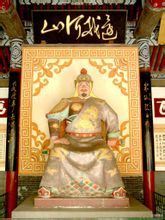

岳飞
>岳飞（1103—1142），字鹏举，宋相州汤阴县（今河南安阳汤阴县）人，南宋抗金名将，中国历史上著名军事家、战略家，民族英雄，位列南宋中兴四将之一。
他于北宋末年投军，从1128年遇宗泽起到1141年为止的十余年间，率领岳家军同金军进行了大小数百次战斗，所向披靡，“位至将相”。1140年，完颜兀术毁盟攻宋，岳飞挥师北伐，先后收复郑州、洛阳等地，又于郾城、颍昌大败金军，进军朱仙镇。宋高宗、秦桧却一意求和，以十二道“金字牌”下令退兵，岳飞在孤立无援之下被迫班师。在宋金议和过程中，岳飞遭受秦桧、张俊等人的诬陷，被捕入狱。1142年1月，岳飞以“莫须有”的“谋反”罪名，与长子岳云和部将张宪同被杀害。宋孝宗时岳飞冤狱被平反，改葬于西湖畔栖霞岭。追谥武穆，后又追谥忠武，封鄂王。
《满江红·怒发冲冠》
《小重山·昨夜寒蛩不住鸣》
《乞出师札子》
《五岳祠盟记》